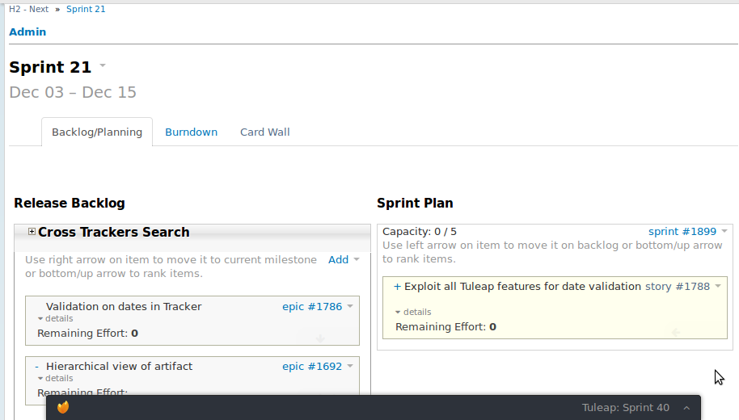
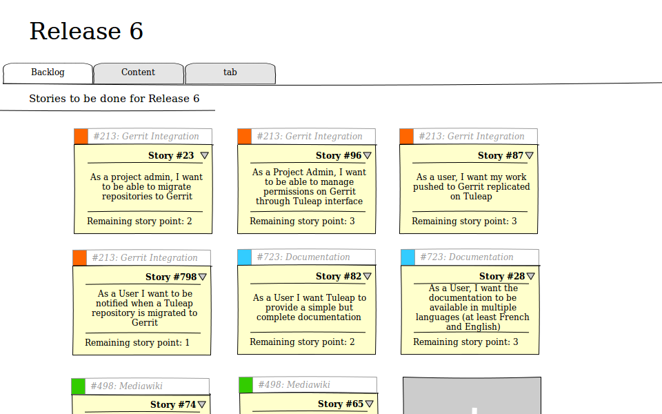
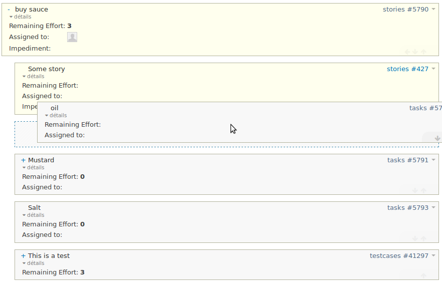
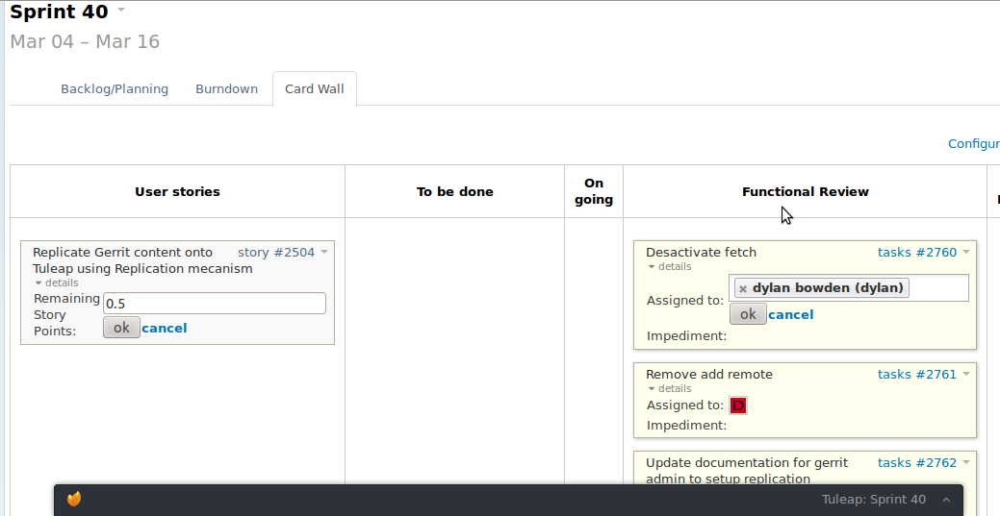
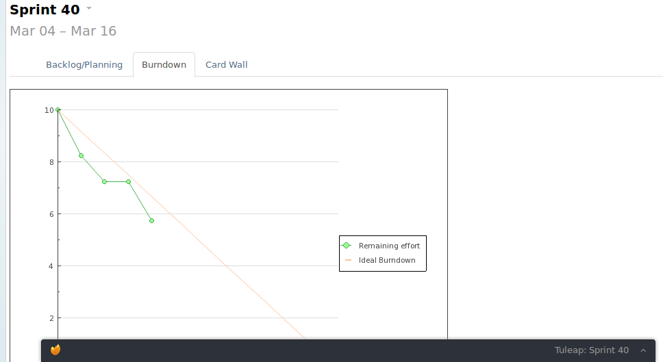

Adopting Agile Methods and Open Source Tools in a Large Enterprise
Domenico Alessi - Ericsson / Manuel Vacelet - Enalean
Tuleap Open ALM
- Full featured ALM: agile planning, documentation, git, wiki, subversion, forums, ...
- Fully customizable tracking system (bugs, stories, todo, vendors, you name it)
- Focus on Enterprise and Industry needs
- And Libre & Open Source (GPLv2+)
Agile development
- What if your tools could adapt quickly to user needs ?
- What if you could drive evolution every 15 days ?
- Can we help reduce Shadow IT and TCO?
Ericsson and Enalean Ways of Working
- Ericsson acts as Product Owner
- Co-funded development: Enalean consolidates requests
Not only Ericsson. Other major players: STMicroelectronics, Orange, ...
Ericsson fills the backlog

Enalean estimates costs
Analysis, mock-ups, discussion with end users

Ericsson prioritizes

Sprint Planning
Every 15 days, Enalean picks-up top priority stories
Ps: it's free and open source, so backlog and sprints are!
Daily standup - Cardwall

Daily standup - Burndown

Monthly releases
Tuleap 5.12 - March'13
- Ericsson: Gerrit replication and burndown
- STMicroelectronics: Gerrit user group
- Orange: Mediawiki-beta merged to master
- Community contribs: better color for Tracker graphs
Kaisen
- Bi-Weekly Demos
- Mid-Year Retrospectives
Benefits
- Buying capacity and not licenses
- End user empowerment
- It's actually more fun than waiting months or years or never for features
- Less of a need for SLA contracts
Tuleap 6: next major release
- Agile Dashboard v1
- Mylyn Connector (in collaboration with Obeo)
- Gerrit
- Mediawiki - beta
- Debian, Centos 6 distributions
Roadmap (after 6.0)
- Interface overhaul (HTML5)
- Agile: Scrum fine tuning + Kanban
- Test management
- REST + OSLC (Tool Integrations)
- Uplift of Mylyn Plug-in to Kepler
Questions ?
PS: Enalean is hiring!
Give Feedback on the Sessions